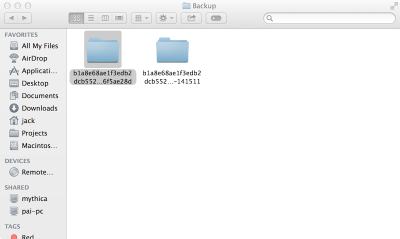

Jack Hanford
Hacker, Marketer, Technology Addict.
Circumvent iOS restore version check
This past week the evad3rs released an iPhone jailbreak for iOS 7. I was very eager to check it out because I have been a jailbreaker since the very first iPhone in 2007. If you aren't familiar with jailbreaking, you can read more about it here.
While restoring, I realized Apple no longer allows you to restore from a backup of a later iOS backup. This caused a pretty major headache for me, so I am going to write about how I was able to get around it.
A while back I deleted a few iOS backups on my computer to free up some space and remembering that file path turned out to be very helpful. Navigating finder to this path ~/Library/Application Support/MobileSync/Backup/ I was then able to locate the corresponding backup.

From here I was able to inspect the contents of the folders to determine the correct backup file I was looking for. Inside the backup folders, you can easily locate a file named Info.plist. This property list file holds all of the information of the iPhone that was backed up.
Opening the info.plist with .plist editor was really easy. (Apparently Sublime Text 2 can't handle .plist's very well) I had download a separate text editor to do so, if you're on a OS X machine you can just use this free program named PlistEdit Pro.
It's all down hill from there. Once you have opened info.plist you can locate the key Product Version and simply edit the string below that to the desired iOS version that you are trying to restore to.

Restoring from a newer iOS version has caused me absolutely no issues whatsoever. All of my settings and application data restored flawlessly and this entire procedure left me confused as to why apple doesn't allow this in the first place. That being said, the only occasion you would probably be doing this is to jump from firmware to firmware which Apple tends to not like.